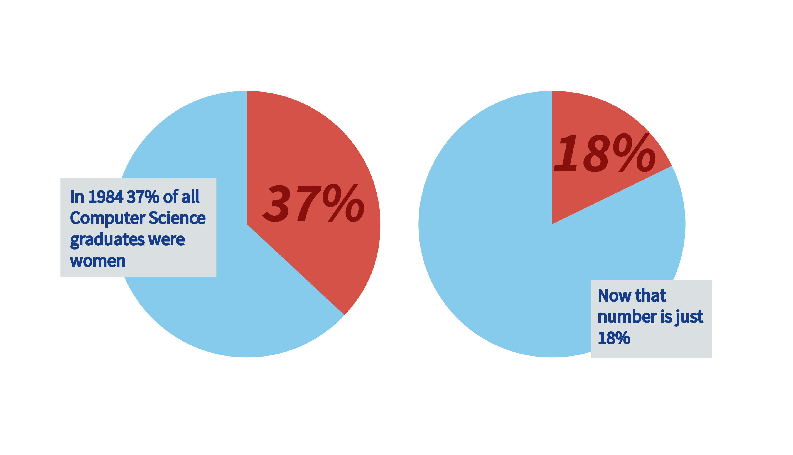
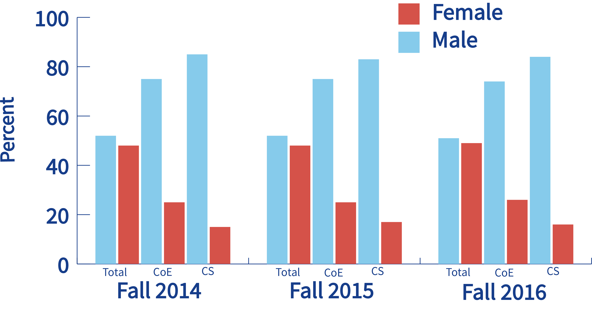

About CS KickStart
The United States is in a computing crisis. The US is in a computing crisis. By 2020, there will be 1.4 million computing-related jobs, which means 1 out of every 250 people will need to work a computing job, even accounting for population growth. At current graduation rates, we’ll only be about to fill 1/3rd of those jobs. 2015 workplace reports revealed that only 18% of Google's tech employees are women, and only 16% of Facebook's tech employees are women.
Without representation in CS women lose financial opportunities and a voice in shaping the future. CS jobs are high-paying, fast-growing, and stable. Additionally, computer scientists build the systems and infrastructure that end up changing the structures of society.
Computer Science needs women.
Women need Computer Science.
But that's just in industry. What about in acedemia?
 So, how do we get women involved in computer science? Based on a survey from EECS 280, (the second introductory programming class at the University of Michigan) we found that female students were less likely to have prior programming experience, female students were less likely to visualize themselves in a career that used CS, and female students found the atmosphere less friendly and more competitive than male students.
In order to combat these issues we made a camp! CS KickStart aims to improve the enrollment and persistence of women in the University of Michigan computer science program in order to give women a voice, level the playing field in terms of academic and career opportunities, and benefit the field of computer science through the development of a talented and diverse workforce by: